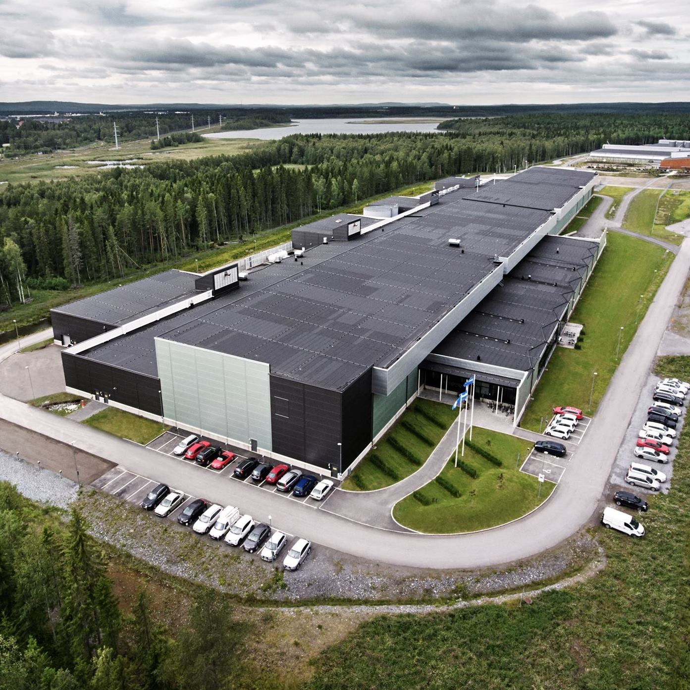
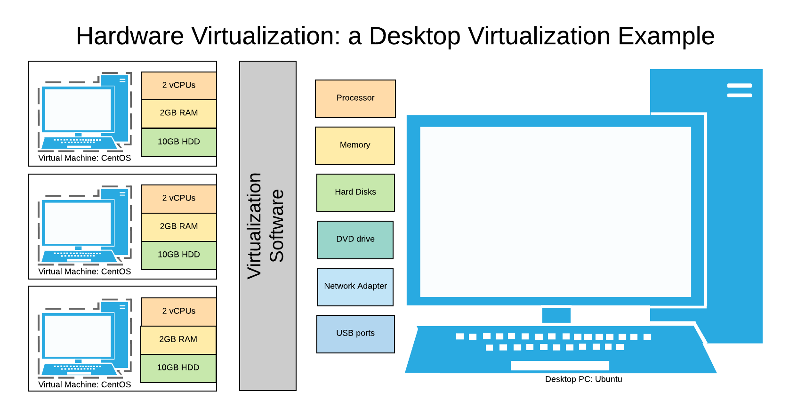
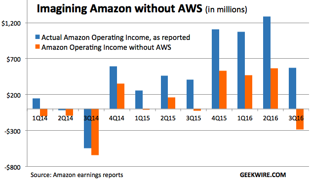
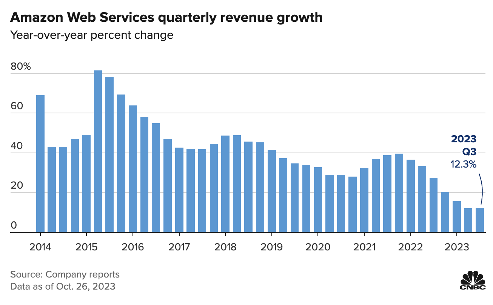
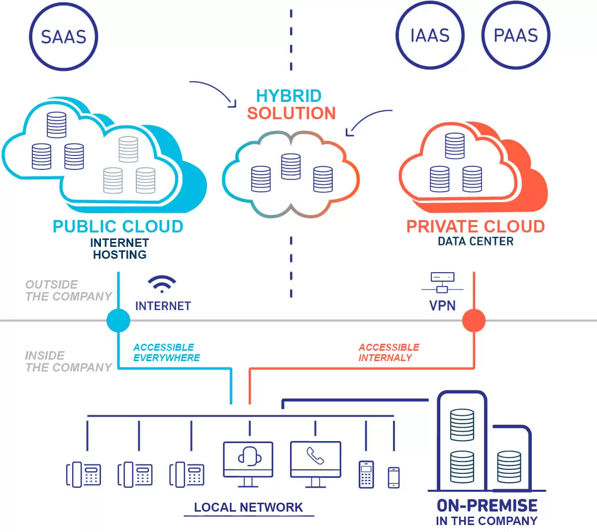
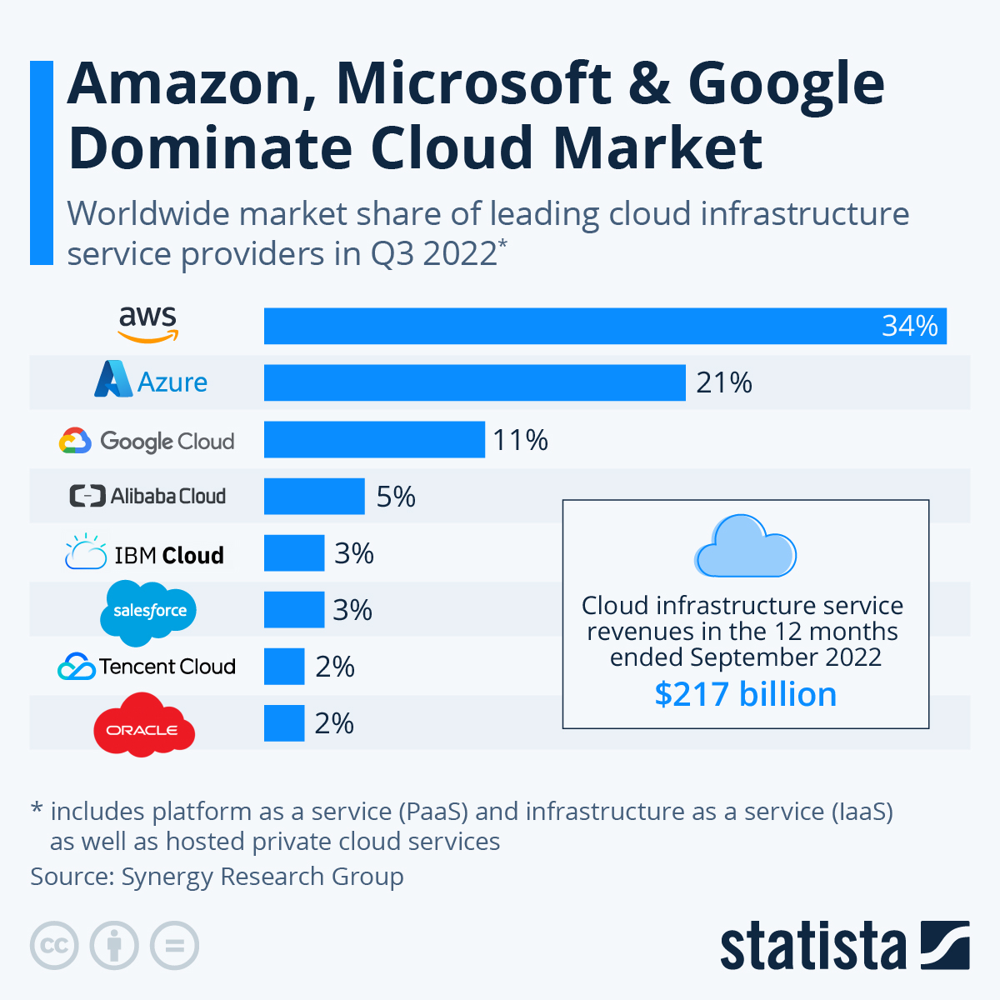

<!DOCTYPE html>
<html lang="en">

<head>
    <meta charset="utf-8" />
    <meta name="viewport" content="width=device-width, initial-scale=1.0, maximum-scale=1.0, user-scalable=no" />

    <title>Cloud Computing</title>
    <link rel="shortcut icon" href="./favicon.ico" />
    <link rel="stylesheet" href="./dist/reveal.css" />
    <link rel="stylesheet" href="./static/css/reset.css" />
    <link rel="stylesheet" href="./static/css/evo.css" />
    <!-- <link rel="stylesheet" href="./_assets/evo" id="theme" /> -->
    <link rel="stylesheet" href="./css/highlight/vs.css" />

    <link rel="stylesheet" href="./../_assets/static/css/evo.css" />
    <link rel="stylesheet" href="./../_assets/static/css/reset.css" />

</head>

<body>
    <div class="reveal">
        <div class="slides"><section  data-markdown><script type="text/template">

## Intro to Cloud Computing


</script></section><section ><section data-markdown><script type="text/template">

### What is the Cloud ?


</script></section><section data-markdown><script type="text/template">


</script></section><section data-markdown><script type="text/template">

But it's a bit bigger...




(Facebook's data center & server racks)

</script></section><section data-markdown><script type="text/template">


Google Cloud Platform datacenters locations

</script></section><section data-markdown><script type="text/template">

> The cloud is a real physical place - accessed over the internet - where a service is performed for you or where your stuff is stored. Your stuff is stored in the cloud, not on your device because the cloud is not on any device; the cloud lives in datacenters. A program running on your device accesses the cloud over the internet. The cloud is infinite, accessible from anywhere, at any time

**Todd Hoff in "Explain the Cloud like I'm 10"**

</script></section></section><section ><section data-markdown><script type="text/template">

### What about "Cloud Computing" ?


For us the cloud is a set of *cloud providers* renting *cloud services* 

which become increasingly "abstracted" from the hardware they run on...

</script></section><section data-markdown><script type="text/template">

#### Services ?

- "Renting a server" ... (this is pure "cloud computing")
- "Replicated & Secure storage space" ...
- "Autoscaling deployment of a microservice" ...

</script></section><section data-markdown><script type="text/template">


(a portion of aws services)

</script></section><section data-markdown><script type="text/template">

#### How is it possible ?


The magic of... virtualization !

</script></section><section data-markdown><script type="text/template">

#### Virtualization ?

> In computing, virtualization refers to the act of creating a virtual (rather than actual) version of something, including virtual computer hardware platforms, storage devices, and computer network resources.

Wikipedia

> Basically we are running software on "abstract hardware" which is a "portion" of a real computer ("bare metal")

</script></section><section data-markdown><script type="text/template">



</script></section><section data-markdown><script type="text/template">

Hardware visualisation: Server Example


</script></section><section data-markdown><script type="text/template">


</script></section><section data-markdown><script type="text/template">

#### Definitions

**Hypervisor** : A program for creating and running virtual machines. 

**Virtual Machine**: The emulated equivalent of a computer system that runs on top of another system

**Containers**: Isolated environments that share the same underlying OS & resources

</script></section><section data-markdown><script type="text/template">

#### Hypervisor : KVM example (Kernel Virtual Machine)


</script></section><section data-markdown><script type="text/template">

#### Nested Hypervisors : Google Compute Engine


</script></section><section data-markdown><script type="text/template">

#### Consequence


> Any sufficiently advanced technology is indistinguishable from magic.

Clarke Third Law

</script></section><section data-markdown><script type="text/template">

#### Hardware abstraction

- Hardware Abstraction ("download more RAM")
- Fine-grained resource allocation / sharing
- Decouple maintenance of hardware from maintenance of software

</script></section><section data-markdown><script type="text/template">

#### Reliability, security...


</script></section></section><section ><section data-markdown><script type="text/template">

### Where does it come from ?


</script></section><section data-markdown><script type="text/template">

Once upon a time...

Amazon (the e-commerce store) has "scaling" issues


</script></section><section data-markdown><script type="text/template">

So basically Amazon became very good at *running* scalable infrastructure as *services*

- For themselves...
- ... but also for other partners (target)

And that infrastructure is often there to answer peak load...

</script></section><section data-markdown><script type="text/template">

2002-2003; The idea

> Building an infrastructure that is completely standardized, completely automated, and relied extensively on web services for things like storage 

http://blog.b3k.us/2009/01/25/ec2-origins.html

</script></section><section data-markdown><script type="text/template">

Let's sell it !


</script></section><section data-markdown><script type="text/template">

#### How does Amazon can offer free shipping to everybody



</script></section><section data-markdown><script type="text/template">

#### How does Amazon can offer free shipping to everybody



</script></section></section><section ><section data-markdown><script type="text/template">

### The many layers of Cloud Computing

</script></section><section data-markdown><script type="text/template">

Hybrid Cloud ? Private Cloud ? Public Cloud ?



</script></section><section data-markdown><script type="text/template">

Cloud providers are offering services with increasing layers of abstraction...

 <!-- .element: height="50%" width="50%" -->

</script></section><section data-markdown><script type="text/template">


</script></section><section data-markdown><script type="text/template">

#### Examples

- Renting a server with hard drive and storing data
- Using data storage service like google cloud storage without managing the infrastructure
- Using google drive

</script></section><section data-markdown><script type="text/template">

#### Examples

- Renting a server with hard drive and storing data **IaaS**
- Using data storage service like google cloud storage without managing the infrastructure **PaaS**
- Using Dropbox **SaaS**

</script></section><section data-markdown><script type="text/template">

#### Examples

- Renting a GPU farm to deploy your Large Language Model and serve it **IaaS**
- Using the HuggingFace API to serve predictions from your model **PaaS**
- Using ChatGPT **SaaS**

</script></section><section data-markdown><script type="text/template">

#### It gets harder

  <!-- .element: height="50%" width="50%" -->

</script></section><section data-markdown><script type="text/template">

  <!-- .element: height="50%" width="50%" -->


</script></section></section><section ><section data-markdown><script type="text/template">

### Public Cloud Providers

</script></section><section data-markdown><script type="text/template">

  <!-- .element: height="50%" width="50%" -->

</script></section><section data-markdown><script type="text/template">

AI Cloud Providers

  <!-- .element: height="50%" width="50%" -->

- https://www.paperspace.com/core
- https://lambdalabs.com/
- https://huggingface.co/hardware

</script></section><section data-markdown><script type="text/template">

🐓🧀🐸🇫🇷


OVH went public in 2021

Scaleway is leading the charge for AI in France (& Europe)

</script></section><section data-markdown><script type="text/template">

🐓🧀🐸🇫🇷

[Thales Cloud Souverain](https://thales-group.prezly.com/thales-et-google-cloud-annoncent-un-partenariat-strategique-pour-developper-conjointement-un--cloud-de-confiance--en-france#)

[OVH x Google Cloud](https://corporate.ovhcloud.com/fr/newsroom/news/ovhcloud-and-google-cloud-announce-strategic-partnership-co-build-trusted-cloud-solution-europe/)

[Scaleway et l'IA](https://www.lemonde.fr/economie/article/2023/09/26/xavier-niel-annonce-des-investissements-strategiques-dans-l-ia_6191008_3234.html)

</script></section><section data-markdown><script type="text/template">

🇪🇺 GAIA-X : Cloud Federation in Europe

[https://www.data-infrastructure.eu/GAIAX/](https://www.data-infrastructure.eu/GAIAX/)

[https://www.contexte.com/article/tech/gaia-x-souverainete-cloud_150712.html](https://www.contexte.com/article/tech/gaia-x-souverainete-cloud_150712.html)

</script></section><section data-markdown><script type="text/template">



</script></section><section data-markdown><script type="text/template">

 <!-- .element: height="50%" width="50%" -->


</script></section></section><section ><section data-markdown><script type="text/template">

### Cloud Computing & Environment


</script></section><section data-markdown><script type="text/template">

I am not competent to say anything about this. Some sources

- The Shift Project : https://theshiftproject.org/article/deployer-la-sobriete-numerique-rapport-shift/
- Scaleway : https://www.scaleway.com/fr/leadership-environnemental/
- Google : https://cloud.google.com/sustainability
- Earth.org : https://earth.org/environmental-impact-of-cloud-computing/
</script></section></section></div>
    </div>
    <!-- <div id="footer-container" style="display:none;"> -->
    <div id="footer-container">
        <div id="footer">
            Tools of Big Data
            <br />
            <a href="https://supaerodatascience.github.io/deep-learning/">https://supaerodatascience.github.io/DE/</a>
            <br />
            <a rel="license" href="http://creativecommons.org/licenses/by-sa/4.0/"></a>
        </div>
    </div>
    <script src="./dist/reveal.js"></script>

    <script src="./plugin/markdown/markdown.js"></script>
    <script src="./plugin/highlight/highlight.js"></script>
    <script src="./plugin/zoom/zoom.js"></script>
    <script src="./plugin/notes/notes.js"></script>
    <script src="./plugin/math/math.js"></script>
    <script>
        function extend() {
            var target = {};
            for (var i = 0; i < arguments.length; i++) {
                var source = arguments[i];
                for (var key in source) {
                    if (source.hasOwnProperty(key)) {
                        target[key] = source[key];
                    }
                }
            }
            return target;
        }

        // default options to init reveal.js
        var defaultOptions = {
            controls: true,
            progress: true,
            history: true,
            center: true,
            transition: 'default', // none/fade/slide/convex/concave/zoom
            plugins: [
                RevealMarkdown,
                RevealHighlight,
                RevealZoom,
                RevealNotes,
                RevealMath
            ]
        };

        // options from URL query string
        var queryOptions = Reveal().getQueryHash() || {};

        var options = extend(defaultOptions, {"transition":"fade","transitionSpeed":"default","controls":true,"slideNumber":true,"width":"100%","height":"100%"}, queryOptions);
    </script>


    <script>
        Reveal.initialize(options);
        var footer = $('#footer-container').html();
        $('div.reveal').append(footer);
        var logo = $('#logo-container').html();
        $('div.reveal').append(logo);
    </script>
</body>

</html>
